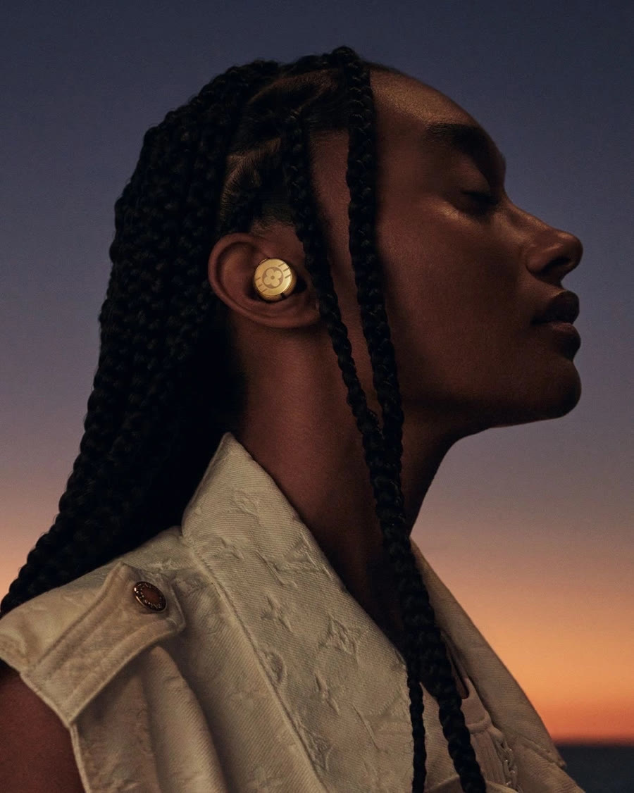
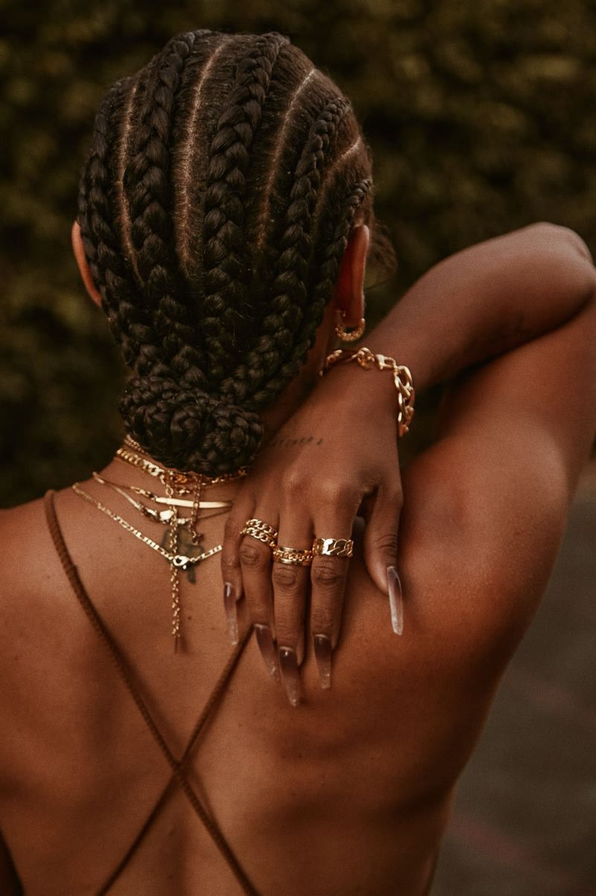
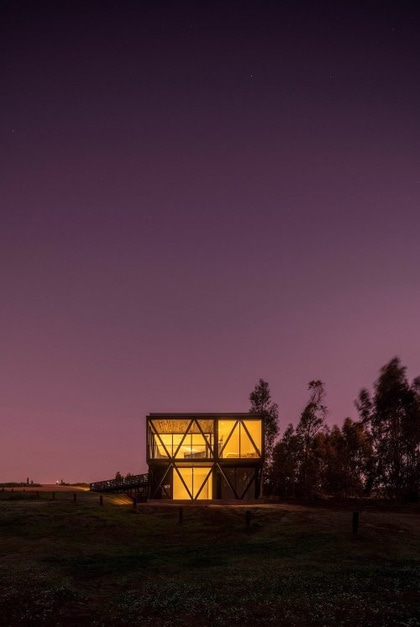
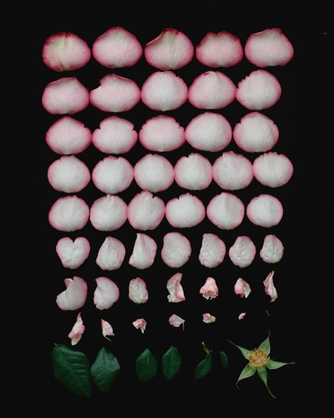
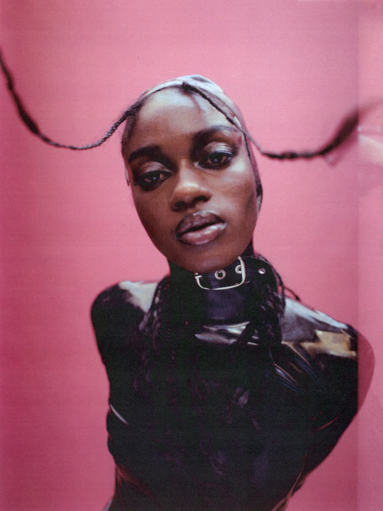
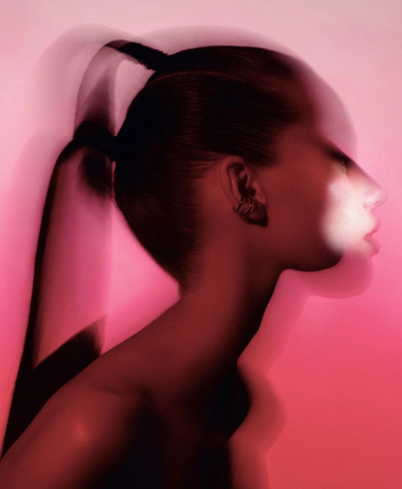
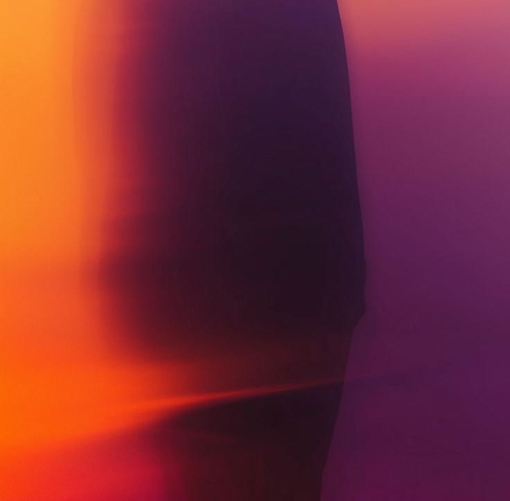
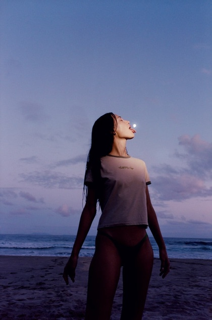

Afterglow guide · stage spread candidates · 10 October 2026
Narrow from here.
Every card is measured: hue in degrees, then upper-quartile lightness. Stage targets are After gold 45° / 0.62, Rose 5° / 0.46, Deep violet 295° / 0.30. Two per search, chosen against each stage's colour and the one-falling-light rule. Left out: other brands' work (Nike, Dacia), pure red (that's Rose), cyan and teal, and grey fog. Where a search came back empty, the pair is the best fit from a neighbouring search, and the card says so. Numbers are for picking: tell me "A3, A7, V2" and so on.
After gold
Copper and terracotta, 45° / 0.62. All five slots are filled.
For the large slot. L1 carries the whole fall in one frame; L2 is the most brand-true light.

L1Placed, After gold lead · Long braids, profile against a gold-to-violet dusk. Gold earbud is a branded product · 50° / 0.47 · saveeL2Long straight hair, gold light on black. May be a celebrity · 40° / 0.15 · savee

L3Replaced by A25 · Braids in a low bun, gold jewellery, warm skin · 47° / 0.40 · savee
R6Wine peony, lit through. Gold centre pulls it warm · 34° / 0.61 · savee
Round two

R7One lit house under a plum night · 348° / 0.43 · savee

R8Rose petals laid out on black · 15° / 0.56 · savee
Black women, natural hair
R9 is the closest hue match on the sheet (2°), though lighter than the stage.

R9Braids flying on a pink ground · 2° / 0.70 · savee

R10Ponytail profile in rose light · 15° / 0.68 · savee

R11Placed, top right · Figure fading into mauve, lower half crop. Also on your board · 10° / 0.50 · savee
Searched: oxblood light portrait, rose gel lit skin, garnet velvet folds, afterglow pink sky silhouette, mauve twilight interior, burgundy backlit profile, plum shadow face, dusky pink skin low light, rose dusk over water, mulberry satin light. Most of what came back was scarlet, product photography, or too light: rose satin, wet lips, gel cells, pink clouds and a glass arc all measured 0.68–0.87 and warm, so they are not here.
Deep violet
Blue-violet night just after dusk, ideally with skin, and a violet horizon. The page needs about three.
Blue hour figure window
Came back as blue rooms and book covers. These are from the dusk silhouette search.
V1A figure watching a plane leave, plum dusk. Also fits Rose (R5) · 339° / 0.39 · saveeV2One figure on a mauve horizon. Measures as Rose (R2) · 359° / 0.53 · savee
Violet twilight portrait

V3Woman on a beach, lavender dusk · 278° / 0.62 · savee